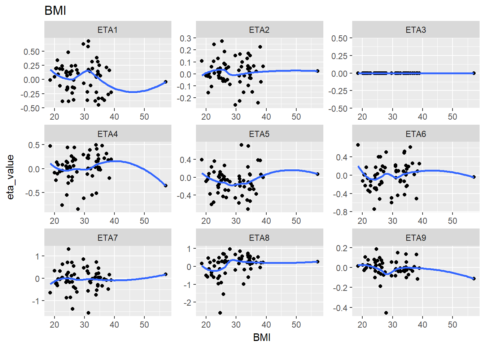

5 Tidyr
library(PKPDmisc)
library(knitr)
library(lazyeval)
library(tidyverse)
#> Loading tidyverse: tibble
#> Loading tidyverse: readr
#> Loading tidyverse: purrr
#> Loading tidyverse: dplyr
#> Conflicts with tidy packages ----------------------------------------------
#> filter(): dplyr, stats
#> is_formula(): purrr, lazyeval
#> lag(): dplyr, statseta_cov <- read.csv("../data/ebe_cov.csv")kable(head(eta_cov))| ID | ETA1 | ETA2 | ETA3 | ETA4 | ETA5 | ETA6 | ETA7 | ETA8 | ETA9 | BW | BMI | AGE | AST | ALT | CRCL | SEX | RACE | ETHNIC |
|---|---|---|---|---|---|---|---|---|---|---|---|---|---|---|---|---|---|---|
| 1 | 0.160 | -0.067 | 0 | -0.195 | 0.058 | 0.083 | 0.167 | 0.204 | -0.114 | 109.4 | 38.3 | 48 | 13 | 17 | 131 | 1 | 1 | 0 |
| 4 | 0.681 | 0.165 | 0 | 0.276 | -0.107 | 0.099 | -1.562 | 0.355 | 0.056 | 120.2 | 31.3 | 53 | 38 | 77 | 177 | 0 | 1 | 0 |
| 5 | 0.480 | 0.017 | 0 | -0.302 | 0.062 | -0.287 | 0.260 | -0.152 | 0.022 | 83.0 | 24.5 | 32 | 26 | 35 | 111 | 0 | 1 | 0 |
| 6 | 0.339 | 0.001 | 0 | -0.105 | 0.079 | -0.228 | -0.326 | -0.138 | 0.105 | 64.2 | 21.0 | 33 | 19 | 20 | 97 | 0 | 1 | 0 |
| 7 | -0.139 | 0.187 | 0 | 0.155 | 0.260 | 0.122 | -1.381 | 0.220 | -0.063 | 74.4 | 26.1 | 47 | 16 | 25 | 93 | 0 | 1 | 0 |
| 8 | -0.115 | 0.060 | 0 | -0.063 | 0.230 | -0.328 | 0.317 | -0.492 | 0.076 | 68.4 | 21.8 | 32 | 15 | 24 | 103 | 0 | 1 | 0 |
g_eta_cov <- eta_cov %>%
gather(cov_name, cov_value, BW:CRCL)kable(head(g_eta_cov))| ID | ETA1 | ETA2 | ETA3 | ETA4 | ETA5 | ETA6 | ETA7 | ETA8 | ETA9 | SEX | RACE | ETHNIC | cov_name | cov_value |
|---|---|---|---|---|---|---|---|---|---|---|---|---|---|---|
| 1 | 0.160 | -0.067 | 0 | -0.195 | 0.058 | 0.083 | 0.167 | 0.204 | -0.114 | 1 | 1 | 0 | BW | 109.4 |
| 4 | 0.681 | 0.165 | 0 | 0.276 | -0.107 | 0.099 | -1.562 | 0.355 | 0.056 | 0 | 1 | 0 | BW | 120.2 |
| 5 | 0.480 | 0.017 | 0 | -0.302 | 0.062 | -0.287 | 0.260 | -0.152 | 0.022 | 0 | 1 | 0 | BW | 83.0 |
| 6 | 0.339 | 0.001 | 0 | -0.105 | 0.079 | -0.228 | -0.326 | -0.138 | 0.105 | 0 | 1 | 0 | BW | 64.2 |
| 7 | -0.139 | 0.187 | 0 | 0.155 | 0.260 | 0.122 | -1.381 | 0.220 | -0.063 | 0 | 1 | 0 | BW | 74.4 |
| 8 | -0.115 | 0.060 | 0 | -0.063 | 0.230 | -0.328 | 0.317 | -0.492 | 0.076 | 0 | 1 | 0 | BW | 68.4 |
lazily evaluated function for ggplot plots
eta_cov_scatter <- function(df, xval = "cov_value", yval, cov_name = "cov_name") {
lazy_plot <- lazyeval::interp(~ggplot(df, aes(x = cov_value, y = ETA1)) +
geom_point() + facet_wrap(~cov_name, scales="free"),
cov_value = as.name(xval),
ETA1 = as.name(yval),
cov_name = as.name(cov_name))
return(lazyeval::lazy_eval(lazy_plot))
}5.0.1 Single plot example
eta_cov_scatter(g_eta_cov, yval = "ETA1")
5.0.2 Iterate through multiple ETA values
lapply(paste0("ETA", 1:4), function(eta, g_eta_cov) {
eta_cov_scatter(g_eta_cov, yval = eta)
}, g_eta_cov)
#> [[1]]
#>
#> [[2]]
#>
#> [[3]]
#>
#> [[4]]
5.1 Double stack
We can actually gather again
g2_eta_cov <- g_eta_cov %>% gather(eta_name, eta_value, ETA1:ETA9 )
kable(head(g2_eta_cov))| ID | SEX | RACE | ETHNIC | cov_name | cov_value | eta_name | eta_value |
|---|---|---|---|---|---|---|---|
| 1 | 1 | 1 | 0 | BW | 109.4 | ETA1 | 0.160 |
| 4 | 0 | 1 | 0 | BW | 120.2 | ETA1 | 0.681 |
| 5 | 0 | 1 | 0 | BW | 83.0 | ETA1 | 0.480 |
| 6 | 0 | 1 | 0 | BW | 64.2 | ETA1 | 0.339 |
| 7 | 0 | 1 | 0 | BW | 74.4 | ETA1 | -0.139 |
| 8 | 0 | 1 | 0 | BW | 68.4 | ETA1 | -0.115 |
kable(tail(g2_eta_cov))| ID | SEX | RACE | ETHNIC | cov_name | cov_value | eta_name | eta_value | |
|---|---|---|---|---|---|---|---|---|
| 3289 | 91 | 0 | 1 | 0 | CRCL | 161 | ETA9 | 0.008 |
| 3290 | 92 | 0 | 1 | 0 | CRCL | 124 | ETA9 | 0.052 |
| 3291 | 93 | 1 | 1 | 0 | CRCL | 136 | ETA9 | 0.134 |
| 3292 | 95 | 0 | 1 | 0 | CRCL | 213 | ETA9 | 0.073 |
| 3293 | 97 | 0 | 1 | 0 | CRCL | 127 | ETA9 | -0.007 |
| 3294 | 98 | 0 | 1 | 1 | CRCL | 86 | ETA9 | 0.026 |
Then we can split up the plots
split_eta_cov <- g2_eta_cov %>% split(.$cov_name)5.1.1 plot all releationships
lapply(split_eta_cov, function(x) {
cov_name <- unique(x$cov_name)
ggplot(x, aes(x = cov_value, y = eta_value)) +
geom_point() + facet_wrap(~eta_name, scales = "free") +
geom_smooth(se = F) +
ggtitle(cov_name) +
xlab(cov_name)
})
#> $AGE
#> `geom_smooth()` using method = 'loess'
#>
#> $ALT
#> `geom_smooth()` using method = 'loess'
#>
#> $AST
#> `geom_smooth()` using method = 'loess'
#>
#> $BMI
#> `geom_smooth()` using method = 'loess'
#>
#> $BW
#> `geom_smooth()` using method = 'loess'
#>
#> $CRCL
#> `geom_smooth()` using method = 'loess'